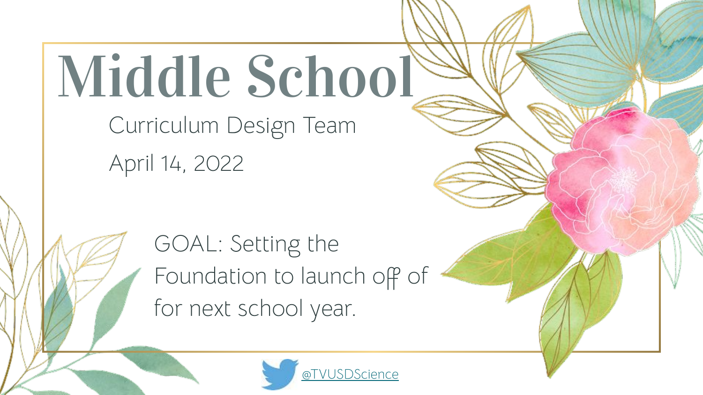
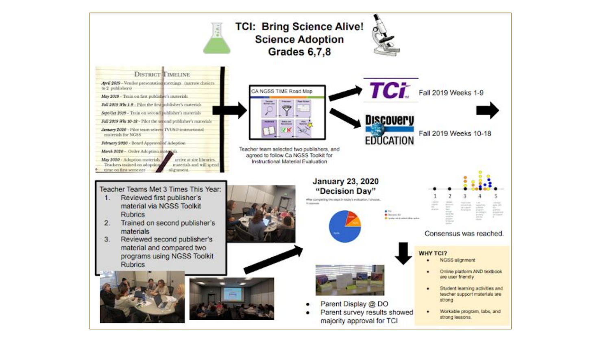

Fifteen-plus years. Title I and private. Classroom, coaching, curriculum, founding-team admin.
The work below is what produced the structural conviction behind the Independent Portfolio — and demonstrates the ability to deliver measurable outcomes inside complex systems.
Schoolwide Performance Turnaround
Inaugural Assistant Principal · Title I Middle School (~1,000 students)
A newly opened middle school faced inconsistent instructional practices, no aligned operating systems, and low baseline performance. Teams were working hard — but not in coordinated directions — and student outcomes reflected that.
- Built and led a data-driven Professional Learning Community (PLC) operating system with consistent rhythms for planning, review, and adjustment.
- Implemented Plan-Do-Study-Act (PDSA) cycles across grade-level and content teams to drive continuous improvement.
- Delivered targeted professional development on MTSS, Universal Design for Learning (UDL), and high-impact instructional clarity.
- Established schoolwide instructional expectations and the monitoring infrastructure to maintain them.
- 10–15% increase in overall performance outcomes in a single year.
- 65%+ of students improved scores in both ELA and Mathematics.
- +6.6 point gain on California Science Test (CAST).
- Contributed directly to California Distinguished School recognition.
Enterprise-wide performance improvement initiative · cross-functional team alignment · KPI-driven execution under measurable goals.
MTSS System Design for Intervention
Tiered support architecture and decision framework
Existing intervention processes were symptom-focused rather than system-focused, leading to over-referral, inconsistent decisions, and inefficient use of staff time and student time.
- Designed and implemented a tiered support decision framework (MTSS) that routed students by objective criteria, not anecdote.
- Introduced an "80% rule" trigger model — if Tier 1 wasn't reaching 80% of students, the issue belonged to instruction, not the student.
- Trained staff in root-cause analysis using the ICEL framework (Instruction, Curriculum, Environment, Learner) to diagnose before prescribing.
- Built the framework now published as the MTSS Intervention Flowchart, 2026–27 (see Section 01).
- Reduced unnecessary intervention referrals.
- Improved Tier 1 instructional effectiveness across grade levels.
- Increased staff clarity and consistency in support decisions.
Process optimization · decision-making framework design · operational efficiency · root-cause methodology applied at scale.
Instructional Coaching & Workforce Development
1:1 coaching, group training, and data-cycle iteration
Variability in instructional effectiveness across teams limited consistency in student outcomes and made performance gains hard to sustain.
- Delivered 1:1 performance coaching paired with whole-team training cycles to build skill across the entire team, not just individuals.
- Modeled and implemented high-impact instructional strategies; coached staff through application.
- Used iterative data cycles to focus coaching on the practices most likely to move outcomes.
- Designed and delivered original professional learning sessions (samples below).
- Improved instructional consistency across teams.
- Strengthened internal capability and reduced reliance on external support.
- Direct contribution to measurable student performance gains.
Workforce development · performance coaching · upskilling and enablement · building internal capability rather than buying it.

Professional Learning sample · comparative performance data analysis (Jan 2024)

Professional Learning sample · CSTP-aligned instructional reflection protocol
Curriculum Design & STEM Program Launch
MS Science Curriculum Design Team · DISCOVER STEM Academy
Students lacked engaging, future-focused learning pathways connecting academic work to real-world skills. Existing curriculum decisions were ad hoc and not coherently aligned across grade levels.
- Led MS Science Curriculum Design Team through structured curriculum review and adoption process (NGSS toolkit rubrics, side-by-side publisher comparison, parent and educator input).
- Designed and launched the DISCOVER STEM Academy program — curriculum, structure, and operating model — from the ground up.
- Built stakeholder alignment across teachers, administrators, families, and community partners.
- Established a sustainable model designed to be maintained and expanded beyond initial launch.
- Increased student engagement in STEM pathways.
- Reached cross-stakeholder consensus on curriculum direction.
- Established a sustainable, repeatable program model.
Product/program development · go-to-market planning · stakeholder alignment · launch and implementation · design for sustainability, not just launch.

MS Science Curriculum Design Team · launch deck (April 2022)

Curriculum review process · NGSS-aligned adoption decision documentation
Data & Systems Leadership
Site-wide performance analysis · Board-level communication
Site-wide performance data existed in volume, but leadership and board-level stakeholders needed it translated into clear narratives that drove decisions — not just reports.
- Analyzed and synthesized site-wide performance data into executive-level summaries.
- Communicated insights and trends directly to leadership and board-level stakeholders.
- Drove decision-making by connecting data trends to strategic priorities and resource allocation.
- Improved strategic alignment between operational work and stated goals.
- Increased clarity in leadership decision-making.
- Supported measurable site-wide growth initiatives.
Executive communication · data storytelling · strategic advising · turning data into decisions for non-technical stakeholders.